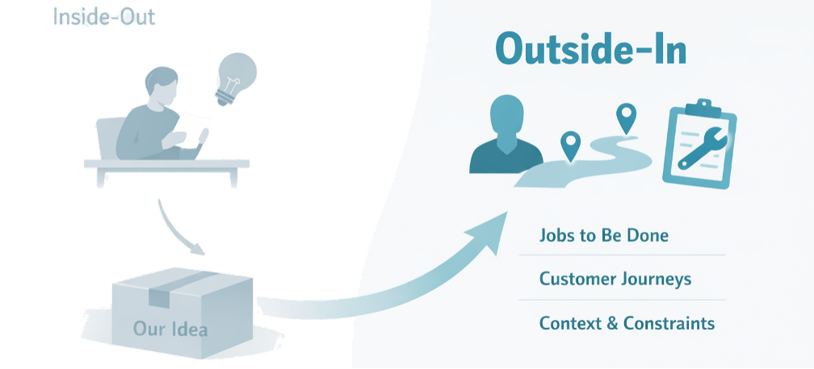
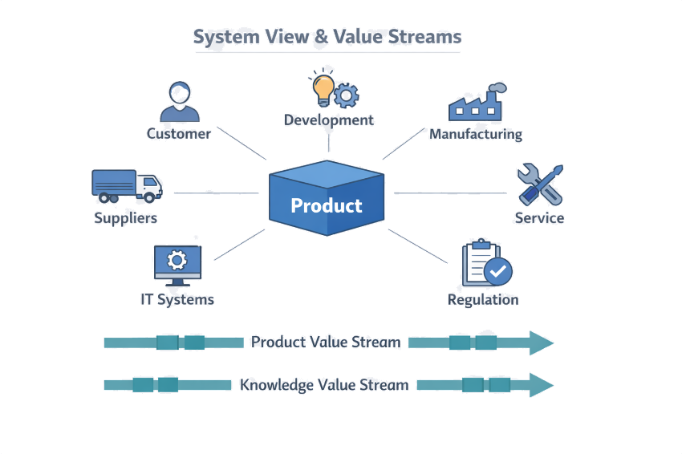
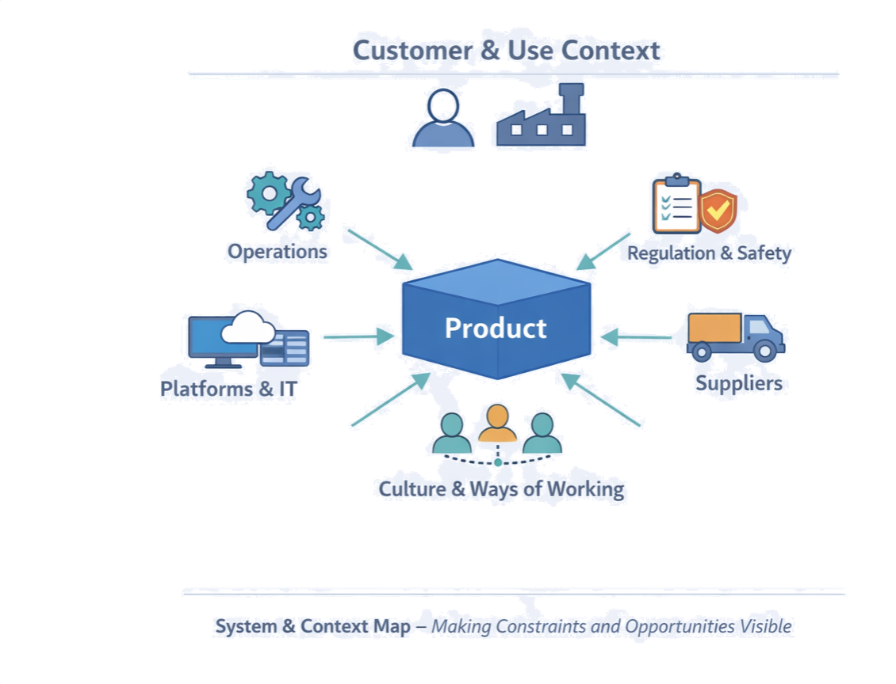
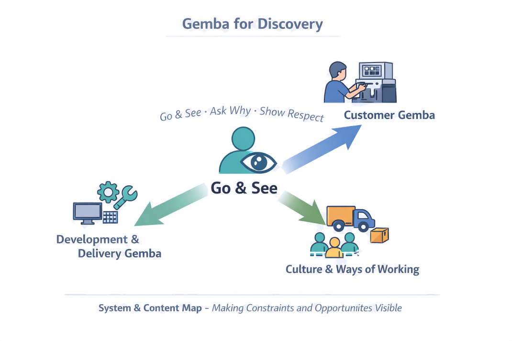
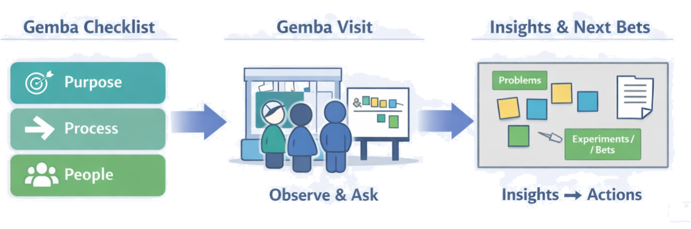
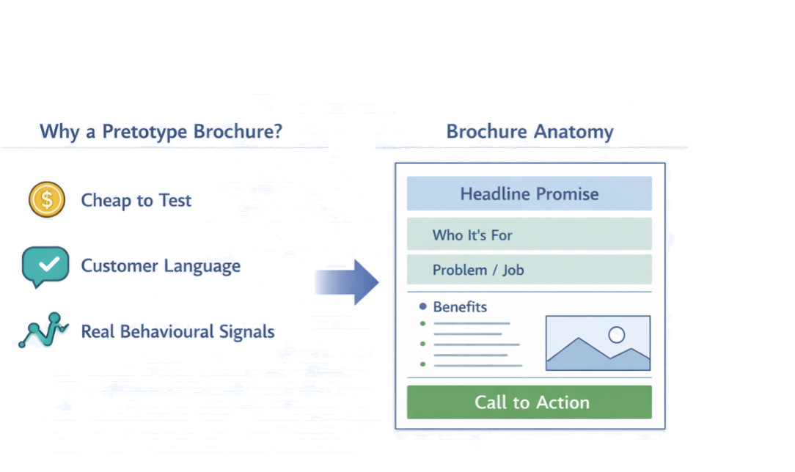
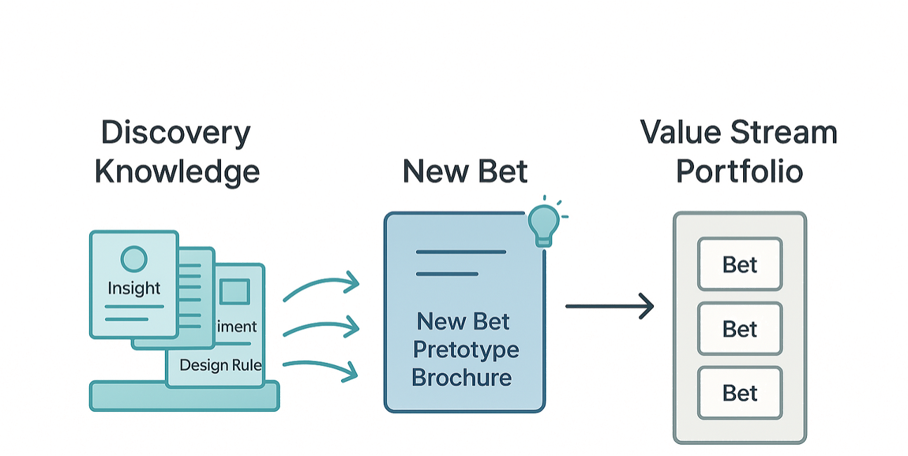
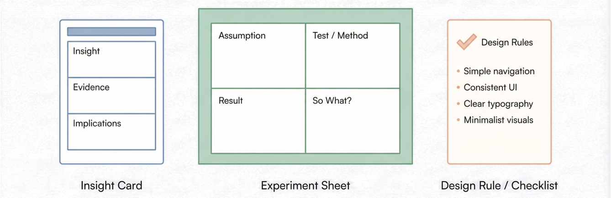

Chapter 4
Customer, Context, and System
Developing the right products and processes starts with seeing the world as our customers and teams experience it — not as it looks in our internal documents. Discovery in LPPD is about deeply understanding customers, the jobs they are trying to get done, and the system of product, process, and ecosystem around them, before we lock in decisions.
The goal is not to fall in love with solutions, but to fall in love with learning: to come back from gemba with sharper questions, clearer problem framing, and stronger pretotype brochures and bets.
"What do we actually know — and what are we still guessing — about our customers, their context, and the constraints of our system?"
Section 4.1
Customer & Problem Understanding
LPPD discovery starts with understanding customers and problems before we execute — not fitting customer quotes around a solution we already like. The aim is a shared, evidence-based view of who we serve, what jobs they are trying to get done, and where they struggle today.
Outside-in, Not Inside-out

Jobs, Journeys, and Contexts
Three complementary views help teams see customers more clearly. You don't need heavy research to start — a few well-run interviews, gemba visits, and simple maps can dramatically improve shared understanding.
View 1
Jobs to Be Done
Focus on the underlying job customers are trying to accomplish, independent of today's solutions. Capture functional, emotional, and social dimensions; note steps and struggle points.
View 2
Customer Journeys
Map key steps in how customers discover, choose, use, and maintain your product. Highlight moments of friction, workaround behaviour, and hand-offs between people or systems.
View 3
Context & Constraints
Note environments, tools, regulations, skills, and habits that shape behaviour. These constraints often become key design inputs for both product and process.
Problem Framing Canvas
To keep teams aligned, use a lightweight problem framing canvas before jumping into solutions. This becomes the front page for discovery work and later connects directly to your pretotype brochure.

Canvas elements
Cross-functional discovery: customer and problem understanding is not just a product or UX job. Bring 2–3 different functions to key interviews or gemba visits, debrief together immediately afterward, and invite teams to challenge assumptions from their perspective. Cross-functional discovery feeds better bets, better pretotype brochures, and more realistic design and flow decisions.
Section 4.2
System & Context
In LPPD we never look at the product in isolation. We design the whole system: product, development process, production and delivery processes, and the wider ecosystem they live in. Understanding this context early helps us avoid local optimizations that create problems elsewhere and reveals constraints that should shape our bets and designs.
Every product sits inside a socio-technical system — people, technology, processes, information flows, and policies that all interact. System discovery asks: who and what touches this product from concept to end of life? How do information, decisions, and materials actually flow between them today? Where do delays, hand-offs, and hidden constraints show up?
Mapping Product and Knowledge Value Streams

LPPD distinguishes two intertwined value streams for discovery mapping:
- Product value stream: the flow of work that creates the specific product — concepts, designs, BOMs, process specs, tooling, software. Sketch it from opportunity/idea to launch, showing major steps, queues, and rework loops.
- Knowledge value stream: how knowledge about markets, technologies, manufacturing, and previous projects is created, captured, and reused. Identify where knowledge is created and whether it is reused or lost after each project.
Context as a First-Class Design Input

Context is not background noise — it is a design input. When you understand context early, you can make better choices about architectures, interfaces, and processes that will work in the real world. Capture these factors explicitly in problem framing, concept choices, and pretotype brochures.
- Operational realities: cycle times, variability, skill levels, maintenance practices, supplier reliability.
- Regulatory and safety requirements that affect both product and process.
- Existing platforms, tooling, and IT systems you must integrate with or can leverage.
- Cultural patterns: how people actually collaborate, escalate, and solve problems.
To make this tangible, use a one-page system & context map: customer at the top, product in the middle, key system elements surrounding it (development teams, manufacturing, suppliers, IT, service, regulators), and only the most important flows drawn. The goal is a shared picture of "the system we are changing" — not exhaustive detail.
Section 4.3
Gemba Practices for Discovery
Gemba — going to the actual place where work is done or value is experienced — is one of the most powerful discovery tools in LPPD. Used well, it gives first-hand insight into customer reality and the real development and delivery system, far beyond what surveys and reports can show.
Gemba in discovery is not a management walk-around or audit. It is a disciplined way of seeing, grounded in three behaviours: go and see, ask why, and show respect. The aim is to come back with sharper questions, not instant solutions.

Purpose – Process – People
A practical way to structure LPPD gemba is the Purpose–Process–People checklist. Before going, agree the purpose of your gemba and sketch a high-level value stream so you know where to walk. During the visit, write short notes under each heading instead of long narratives — this makes debriefs faster and more focused.
Purpose
Why does this exist?
Why does this place or activity exist? What value is it trying to create for whom?
Process
How does work flow?
How does work actually flow here? What are the main steps, hand-offs, and failure modes?
People
Who is doing the work?
What gets in their way? What ideas and concerns do they have?
Turning gemba into plays, not tourism. Immediately after the visit, debrief as a team: "What did we see?", "What surprised us?", "What questions did this raise?", "What ideas does this spark?" Capture 5–10 concrete insights. Within a week, connect insights to action — update problem framing canvases, propose 1–3 adjustments to current bets, and take them to the next portfolio/obeya review.
Gemba Questions for LPPD

- "Walk me through what you're trying to do here."
- "Where does this often go wrong or take longer than it should?"
- "What workarounds have you invented?"
- "What makes your work harder than it needs to be?"
- "Where do requests or information arrive too late or unclear?"
- "If you could change one thing in this process, what would it be?"
Avoid "why don't you like our product?" or leading questions that confirm your existing solution ideas.
Section 4.4
Pretotype Sales Brochures & Early Signals
Before committing serious time and money, LPPD teams use pretotype sales brochures to test whether customers care about a concept at all. A brochure is a fast, low-cost way to simulate the offer and observe real behaviour, instead of relying on opinions or internal enthusiasm.
Compared to building prototypes or full business cases, it is much cheaper and faster, surfaces whether customers understand and value the promise, and generates concrete behavioural signals — clicks, sign-ups, callbacks, pre-orders — rather than just "that sounds nice." In LPPD, the brochure is the front door for a bet: if we can't get promising early signals on the brochure, we don't scale the investment.

Anatomy of a Strong Brochure
A good brochure can be a one-pager PDF, a simple landing page, or even a physical sheet — as long as it clearly answers these questions.
Headline promise
A clear, outcome-focused headline that states the main benefit for the target customer.
Who it's for
A short description of the specific segment or situation — tied back to the problem framing canvas.
The problem or job
Plain-language description of the job, pain, or opportunity — ideally with one or two real quotes from gemba.
How this helps (core benefits)
3–5 bullets that describe benefits, not technical features.
Minimal solution sketch
A single diagram, photo, or short list that makes the offering credible, without over-specifying details.
Next step / call to action
A very concrete ask that lets you measure behaviour: book a call, sign up for early access, request a pilot, pre-order, or commit a small deposit.
Designing for Behavioural Signals
The power of a pretotype brochure is in the signals it generates. In LPPD, you explicitly decide what signal you need to treat the bet as worth scaling, and what threshold you expect — e.g., "At least 10% of invited customers request a follow-up within two weeks."
- Attention: views or opens (weak signal).
- Engagement: clicks on "learn more", time spent, replies to emails.
- Commitment: sign-ups for pilots, demo bookings, "fake door" pre-orders, small deposits, or letters of intent.

Pretotype brochures are not side experiments — they connect directly to strategy and discovery. Inputs come from gemba and problem framing. Each brochure is tied to a specific bet in the portfolio with a clear learning objective. Results feed into the next portfolio review: continue, pivot, or stop the bet based on real customer behaviour.
Section 4.5
Capturing and Reusing Discovery Knowledge
Discovery work is expensive: interviews, gemba, experiments, pretotypes. LPPD treats the knowledge generated as a primary deliverable, not a by-product. When discovery knowledge is captured and reused, later projects start further ahead, risks are lower, and teams can focus their creativity on the parts that truly need new thinking.
In many organisations, teams say "we learned a lot" at the end of a project — but the learning lives in people's heads or buried in slide decks. The next team then repeats interviews, rediscovers the same constraints, and reruns old experiments. LPPD aims for reusable knowledge: insights, patterns, and decisions that are easy to find, easy to understand, and safe to apply in new contexts.

What to capture: focus on knowledge that is likely to matter again — customer and job insights that are stable over time, context and system constraints that shape design and process decisions, experiment results (especially when they invalidate a plausible idea), and design rules and patterns that emerge. A helpful rule: if you would be annoyed to discover your organisation has already learned this but you didn't know, capture it.
Lightweight Knowledge Artefacts

One key insight per card: short statement, evidence (quote/data), implications for product and process.
What was tested, assumptions, method, result, and "so what" for future projects.
Distilled "if…then" rules or checklists that teams can apply during design and planning.
Making reuse easy. At the start of a new bet or pretotype brochure, teams explicitly search for prior insight cards, experiments, and rules related to the same customers, jobs, or technologies. During concept and set-based work, teams check existing knowledge before launching new tests. Portfolio and strategy reviews include a "knowledge view": where recent learning came from and where it is being reused. Good reuse systems are simple and embedded into routines so that using them is easier than starting from scratch.